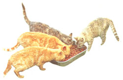

COUNTRY VET
The truth about cats' and dogs' foods.
Like their owners, pets depend on a balanced diet for their general health and well-being. But these days-with store shelves brimming with dog and cat foods specially formulated for every size, shape, and age, figuring out what's best for your pet can be daunting. To help you sort out what's healthful and what's hype, MOTHER turned for advice to small animal veterinarian and emergency-clinic owner Dr. Andrew Martin.
MOTHER: What is the most common nutrition-related problem that you encounter in your practice?
Dr. Andrew Martin: Obesity. Most household pets are, like most Americans, overweight. And the things that contribute to added weight in people are usually responsible for the same problem in their pets: snacking and insufficient activity. Very rarely do we see a pet with a gland problem causing increased weight.
MOTHER: Is there a good way to judge if a pet is overweight?
A.M.: In every household pet, we should be able to easily feel the rib cage-not just know that there are ribs there. In deep-chested breeds of dogs, such as greyhounds, German shepherds, and setters, we should also be able to see the individual ribs. In cats, the main site of fat accumulation is the underbelly, which should never get to the point where it sways as the cat walks. In either case, the flatter the back of the animal gets, the closer to true obesity the pet is approaching.
MOTHER: What health risks are associated with obesity in pets?
A.M.: The major health risks attributable to excess weight in pets are the same as those seen in people: heart disease and arthritis. The leading causes of death in larger dogs are heart failure and euthanasia due to arthritic pain. In overweight cats, there is also a very severe liver disease that is quite common and often fatal.
MOTHER.: What's the best way to keep a pet from becoming obese?
A.M.: When attempting to control or decrease the weight of your pet, there is a lot to be gained from adjusting not only the type of food it gets but also the amount. Diets that are marketed for specific age or activity-level groups are generally produced with either differences in vitamin and mineral content designed to meet growth needs of young animals, or altered caloric content designed to meet activity-level needs of adult animals. If you cannot feel your dogs ribs, you need to feed fewer calories-either by changing to a lower calorie food or by feeding less in volume. And, of course, increased activity can only help, if you have the resolve to do it.
MOTHER: With so many foods on the market, bow can a per owner choose the tight one?
A.M.: The major pet food companies all have veterinary nutritional experts on staff, who eliminate the need for guesswork on the part of pet owners. The recent explosion in the variety of pet foods unfortunately complicates the decision making process. There are now all-natural foods, foods with higher meat content than soy or corn meal, lamb and rice varieties, high-protein foods, and so on. Most of these foods are designed according to what the marketing department folks think the public will be intrigued into purchasing rather than any technical reason why they would be better for your pet. And as for your local 'Super Pet Store' that sells these products, it's most likely staffed by part-time teenage help, rather than by anyone with special training.
I would trust the expertise of the professionals at Purina or Friskies over the advice of anyone trying to sell me a product that I have never heard of. The marketing personnel at some of the newer food manufacturing companies have not been able to explain to me how a processed poultry-based food can be more digestible than a processed soybean or cornmeal product because it's not!
Let's face it, the poultry or beef 'product' in a pet food is not any part that a human would consume; it is simply processed to look like liver, chicken breast, or chunks of beef to be more marketable to you.
MOTHER: Of the three main types of food-moist, semi-moist, and dry-which do you recommend?
A.M.: I am a strong proponent of feeding exclusively dry food to your pet. The crunchiness is a major factor in warding off gingivitis. Dry food is also healthier than moist or semimoist because of the higher fat content of canned foods.
However, animals, like people, find fattier foods tastier and will generally prefer the canned foods. And as an extension of this fact, most pets like human food even better. Unfortunately, in addition to being higher in calories than any pet food, most human diets are not anywhere near balanced for your pet. Feeding anything more than the occasional treat to your pet usually results in poor body condition as well .as vitamin and mineral imbalances. This can lead to irreversible growth abnormalities in rapidly growing puppies (especially in large-breed dogs like rottweilers and Great Danes) or to severe heart disease in cats.
But as a general rule, as in human nutrition, just about anything is okay to feed your pet in small amounts, provided a balanced food composes the majority of the diet. This is assuming your pet has no allergies or underlying medical conditions; in these cases, consult your veterinarian. The professionals know how to design the best diet, and pet owners should rely on them.
MOTHER: Is there truth to the rumored connection between certain kinds of food and urinary disease in cats?
A.M.: Many cats will form crystals in their urine (similar to bladder stones in people) if the magnesium content of their food is not limited. Unfortunately, the production of these crystals is a multifactorial process and the best advice that the experts have for us so far is to use low-ash acidifying foods. Most dry food varieties and all seafood varieties are very high in ash and are to be avoided at all costs in cats with a propensity to form crystals. While it might be considered most cautious to avoid these foods in all cats right from the start, there is far too much we do not know about the formation of crystals to make such a general recommendation.
MOTHER: Once we've figured out what to feed our pets. the next question is when should we feed them? Would you recommend free-feeding or set mealtimes?
A.M.: Many pets will pace themselves and do quite well if fed free-choice. However, creating distinct mealtimes helps in housebreaking puppies, and it can be very difficult to change to free choice with most young dogs, who instinctively tend to gorge themselves-like many people I know at a buffet! Most cats do well, but unfortunately many owners will refill the bowl whenever it starts to get low, rather than limiting the pet to a specific volume per day. Fresh water should always be provided freechoice, the only reasonable exception being the limiting of consumption near bedtime while housebreaking puppies.
MOTHER: How can you tell if your dog or cat is not getting proper nutrition, despite the fact that it may begetting enough food?
A.M.: Any pet that is losing weight while eating the same amount of food and maintaining a steady activity level has a medical condition and should be examined by a veterinarian as soon as the weight loss is noticed. Parasitism, diabetes, kidney failure, and a variety of intestinal maladies are all potential culprits. Likewise, any dramatic increase in water consumption warrants a visit to your vet.
MOTHER: Finally, are food allergies common among pets-and what are the telltale signs to watch for?
A.M.: Food allergies are almost always manifested by itchiness and are always acquired rather than inherited. We do not see food allergies that pets 'grow out of,' as may occur in people. The best way to identify a food allergy is to avoid giving your pet the potential offending substance to see if the symptoms go away. This may take six to eight weeks on a different diet, and many itchy pets will need medication in the meantime to stay comfortable.
Unfortunately, most pets with with an allergy to one substance invariably have allergies to many others, and so these animals are quite likely to eventually develop allergies to substances in the new food. There does not appear to be any one pet food ingredient that contains more potent allergenic substances than any other.
I should also mention that there are many more pets with inhalant allergies causing the same itchiness. The current technology of using blood testing to differentiate what a pet is allergic-to-food or inhalant-seems to be only about 50% accurate. Flip a coin until improved testing is available.
|
 |
|
|